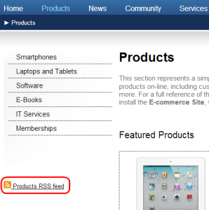

Usage example - CMS RSS feed
The CMS RSS feed web part can be used to create RSS feeds from pages in the content tree. It has a built-in Pages data source, which means that the web part can work separately without any connected data source and can be used to create feeds from pages of any type.
The following example demonstrates how to use the web part to create a feed link on the /Products page of the sample Corporate site. The same procedure can be used on any other page and for pages of any other type. You just need to specify the required path, page type and transformation in the web part properties.
Apart from this universal web part, you can use syndication web parts that are pre-configured for specific page types. See the listing in Syndication web parts and widgets.
To create a RSS feed link on a page:
Open the Corporate site in the Pages application.
Select the /Products page in the content tree.
Switch to the Design tab.
Add the CMS RSS feed web part to the Left zone web part zone.
Set the following web part properties:
Link text: Products RSS feed
Feed name: MyProductsFeed
Feed title: Corporate Site Products
Feed description: This is a sample RSS feed of products on the Corporate Site.
Path: /Products/%/%
Transformation name: CMS.RSSTransformations.Products
Leave the default values for the rest of the properties and click OK.
If you now view the Products page on the live site, you can see the RSS icon and link.

RSS feed link on the live site
If you click the link, your browser detects that you are accessing an RSS feed and displays the content. The URL of the feed is actually the URL of the page where the web part is placed with the ?rss=MyProductsFeed query string parameter appended (this can be modified using the Feed querystring key and Feed name web part properties). You can use the same URL to access the feed directly both from a browser or a dedicated RSS reader program.